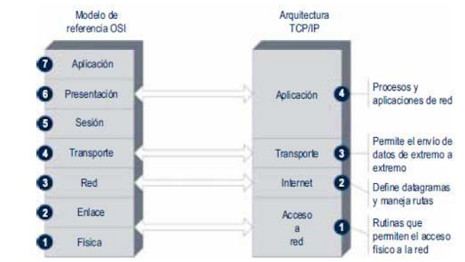

1983 - Protocolo TCP/IP
El Nacimiento Oficial de Internet

Modelo de capas del protocolo TCP/IP
¿Qué es TCP/IP?
TCP/IP son las siglas de Transmission Control Protocol/Internet Protocol
(Protocolo de Control de Transmisión/Protocolo de Internet). Es el conjunto de protocolos de comunicación
que permite que diferentes redes y computadoras se comuniquen entre sí, formando lo que conocemos como Internet.
El 1 de Enero de 1983: Flag Day
El 1 de enero de 1983, conocido como el "Flag Day" (Día de la Bandera),
ARPANET realizó la transición oficial del protocolo NCP (Network Control Protocol) al nuevo protocolo TCP/IP.
Esta fecha se considera el nacimiento oficial de Internet tal como lo conocemos hoy.
🎉 1 de Enero de 1983
El día que nació Internet moderno
ARPANET adopta oficialmente TCP/IP
|
¿Quiénes Crearon TCP/IP?
Los principales creadores del protocolo TCP/IP fueron Vinton Cerf y Robert Kahn,
conocidos como los "Padres de Internet". Comenzaron a trabajar en este proyecto en 1973 y
publicaron su especificación en 1974.
Los Padres de Internet:
- Vinton Cerf: Científico de la computación, trabajaba en Stanford
- Robert Kahn: Ingeniero eléctrico, trabajaba en ARPA
¿Por Qué Era Necesario TCP/IP?
Antes de TCP/IP, las diferentes redes de computadoras no podían comunicarse entre sí porque
usaban protocolos incompatibles. TCP/IP resolvió este problema creando un lenguaje común
que todas las redes podían entender.
Problemas que TCP/IP Solucionó:
- Incompatibilidad entre diferentes tipos de redes
- Falta de estándares de comunicación universales
- Necesidad de conectar redes militares, académicas y comerciales
- Transmisión confiable de datos a través de redes no confiables
Las Dos Partes de TCP/IP
| TCP (Transmission Control Protocol) |
IP (Internet Protocol) |
|
Función:
Divide los datos en paquetes y los reensambla en el destino.
Características:
- Garantiza que los datos lleguen completos
- Verifica el orden de los paquetes
- Solicita reenvío de paquetes perdidos
- Control de errores
|
Función:
Se encarga de direccionar y enrutar los paquetes de datos.
Características:
- Asigna direcciones únicas (direcciones IP)
- Encuentra la mejor ruta para los paquetes
- No garantiza la entrega (eso lo hace TCP)
- Permite la comunicación entre redes
|
El Modelo de Capas TCP/IP
TCP/IP funciona mediante un modelo de capas, donde cada capa tiene una función específica:
| Capa |
Nombre |
Función |
| 4 |
Aplicación |
Protocolos de aplicaciones (HTTP, FTP, SMTP) |
| 3 |
Transporte |
Control de transmisión (TCP, UDP) |
| 2 |
Internet |
Direccionamiento y enrutamiento (IP) |
| 1 |
Acceso a Red |
Hardware y conexión física |
|
Analogía: Imagina que TCP/IP es como el sistema postal. IP es como
la dirección en un sobre (indica a dónde va), y TCP es como el cartero que se asegura
de que el paquete llegue completo y en orden.
|
Características Técnicas
| Característica |
Detalle |
| Año de Adopción |
1983 (desarrollo desde 1973) |
| Creadores |
Vinton Cerf y Robert Kahn |
| Tipo |
Protocolo de comunicación |
| Función Principal |
Permitir comunicación entre redes diferentes |
| Versión IP Original |
IPv4 (aún en uso hoy) |
| Versión IP Actual |
IPv6 (adoptada gradualmente) |
Direcciones IP
Una dirección IP es un número único que identifica a cada dispositivo conectado a Internet.
Es como el número de teléfono o la dirección postal de tu computadora.
Ejemplo de Direcciones IP:
| Tipo |
Ejemplo |
| IPv4 |
192.168.1.1 |
| IPv6 |
2001:0db8:85a3:0000:0000:8a2e:0370:7334 |
Impacto y Legado
TCP/IP es el fundamento de Internet. Sin este protocolo, no existiría la red global
que conocemos hoy. Ha permitido la conexión de miles de millones de dispositivos en todo el mundo.
Logros de TCP/IP:
- Creó un estándar universal de comunicación en redes
- Permitió la expansión global de Internet
- Es independiente del hardware y software utilizado
- Sigue siendo la base de Internet 40+ años después
- Ha permitido conectar más de 5 mil millones de dispositivos
|
🏆 Reconocimiento:
En 2004, Vinton Cerf y Robert Kahn recibieron el Premio Turing
(considerado el "Nobel de la Computación") por su creación de TCP/IP.
|
📚 Enlaces Relacionados
Para más información sobre TCP/IP, consulta:
|